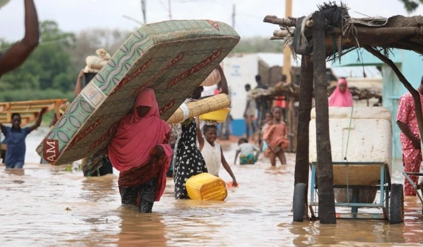
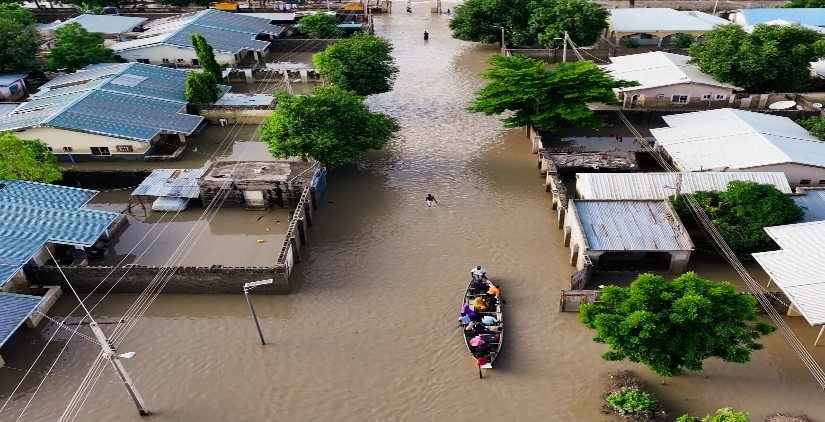

1. Context: Compound Drivers of Flood Risk in Borno State
Flooding is one of Nigeria's most destructive climate-related hazards, with increasing frequency and severity driven by climate variability, environmental degradation, rapid urbanisation, and ageing infrastructure. The 2024 Alau Dam flood in Borno State demonstrated how extreme rainfall, catchment degradation, and infrastructure failure can combine to produce devastating humanitarian and socio-economic impacts (IOM, 2024).
While conventional engineering measures such as dams and embankments remain essential, they are often insufficient to address the underlying drivers of flood risk. Nature-based Solutions (NbS)—including watershed restoration, afforestation, wetland conservation, riparian buffers, and sustainable land management—provide a complementary approach by restoring ecosystem functions that regulate water flow, reduce runoff, and strengthen long-term climate resilience (IUCN, 2020).

2. Evidence and Analysis
The 2024 Alau Dam flood exposed significant weaknesses in flood risk management in Borno State. Although prolonged heavy rainfall triggered the disaster, its impacts were amplified by ageing infrastructure, inadequate dam maintenance, sediment accumulation, limited spillway capacity, and weak preparedness and early warning systems (Gittens, 2026).
These structural deficiencies were compounded by upstream catchment degradation, which reduces soil infiltration and increases surface runoff during extreme rainfall events. Oku, Asubonteng, and Blege (2015) demonstrate that improving soil and vegetation management enhances infiltration and reduces erosion and surface runoffs, highlighting the importance of ecosystem restoration in flood risk reduction. International evidence further shows that Nature-based Solutions—including watershed restoration, afforestation, wetland conservation, riparian buffers, and Vetiver grass systems—can complement conventional infrastructure to strengthen long-term flood resilience (IUCN, 2020; World Bank, 2017).
3. Policy Options
Addressing flood vulnerability in the Alau Dam catchment and the Ngadda River basin requires evaluating three distinct policy pathways:
| Policy Option | Core Interventions & Mechanism | Assessment & Limitations |
|---|---|---|
| Option 1: Conventional Grey Infrastructure | Focuses on physical dam rehabilitation, spillway expansion, embankment reinforcement, and urban drainage channel improvements. | Essential for immediate structural safety, but does not address upstream catchment degradation, soil erosion, sedimentation, or excessive surface runoff. |
| Option 2: Standalone Nature-Based Solutions (NbS) | Promotes watershed restoration, afforestation, wetland conservation, riparian buffers, and Vetiver grass (Chrysopogon zizanioides) to reduce erosion, improve soil infiltration, stabilise slopes, and slow runoff (Oku et al., 2015). | Restores ecological hydrology and reduces sediment loads, but requires complementary structural spillway engineering to contain extreme 1-in-100-year reservoir surges. |
| Option 3: Integrated Grey-Green Approach (Recommended) | Combines conventional dam and spillway rehabilitation with upstream Nature-based Solutions across the Alau Dam catchment and Ngadda River floodplain. | Addresses both immediate structural hazards and underlying ecological drivers of flood risk, extending reservoir lifespan and strengthening long-term resilience (World Bank, 2017; IUCN, 2020). |

4. Policy Recommendations
1. Adopt an Integrated Grey-Green Rehabilitation Strategy
Combine the structural reconstruction and spillway expansion of Alau Dam with systematic upstream watershed restoration and downstream wetland conservation along the Ngadda River corridor.
2. Deploy Afforestation and Vetiver Grass Bio-Engineering
Restore the degraded Alau catchment through indigenous afforestation and contour planting of Vetiver grass (Chrysopogon zizanioides) to stabilise embankments, reduce sheet erosion, enhance soil infiltration, and control reservoir sedimentation.
3. Mainstream Nature-Based Solutions into State Policy
Integrate IUCN Global Standard Nature-based Solutions into Borno State's flood risk management, river-basin watershed planning, urban zoning, and climate adaptation frameworks.
4. Strengthen Multi-Agency and Community Coordination
Establish a coordinated catchment governance mechanism linking the Borno State Emergency Management Agency (BOSEMA), National Emergency Management Agency (NEMA), Chad Basin Development Authority, relevant state ministries, and local riparian communities to sustain ecosystem-based flood management and early warning.
5. References
- ACAPS. (2024). Nigeria: Humanitarian impact of floods in Borno State. Briefing Note, September 2024.
- Gittens, J. (2026). Alau Dam failure: Infrastructure and flood risk assessment.
- IOM (International Organization for Migration). (2024). Nigeria Flood Situation Report: Borno State (Maiduguri Municipal Council and Jere).
- IUCN (International Union for Conservation of Nature). (2020). Global Standard for Nature-based Solutions: A user-friendly framework for the verification, design and scaling up of NbS. Gland, Switzerland: IUCN.
- Oku, E. E., Asubonteng, K. O., & Blege, P. K. (2015). Role of soil properties and precipitation concentration in enhancing floods in Northern Ghana.
- World Bank. (2017). Implementing nature-based flood protection: Principles and implementation guidance. Washington, DC: World Bank.